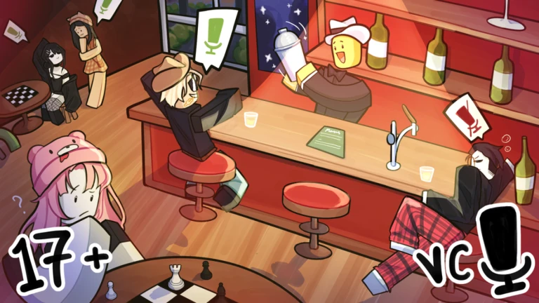
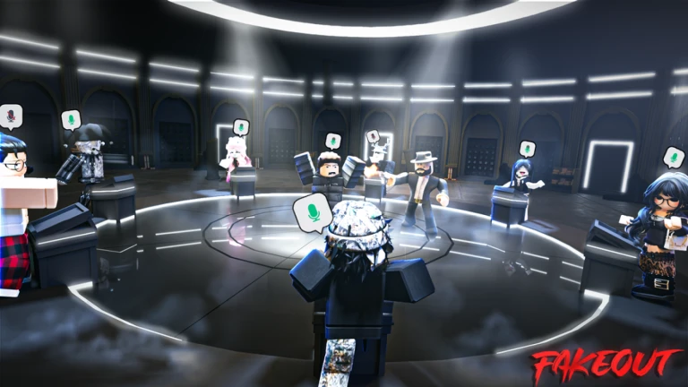
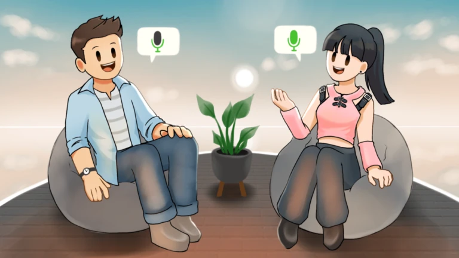

Poke Haven
A social hangout game on Roblox with over 13 million visits. I designed gameplay systems including trading, mini-games, and dynamic events to drive engagement and retention.
PlaySelected business projects and experiences I have created, launched, and managed.

A social hangout game on Roblox with over 13 million visits. I designed gameplay systems including trading, mini-games, and dynamic events to drive engagement and retention.
Play
A seven-player social deduction game where deception meets strategy, built to create fast rounds and strong replay value.
Play
A personal project built around one-on-one voice chats with occasional group rounds, where users can mix and match interests to shape who they meet.
Play